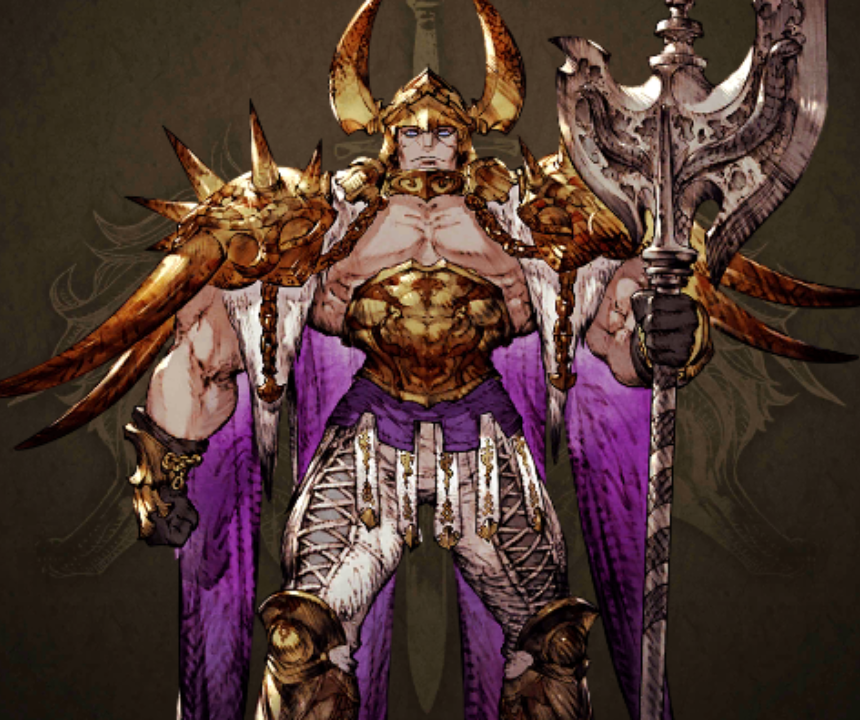

あらすじ
フェネスの王ムラガのもとに嫁ごうとしていたホルンの王女マシュリーは賊に襲われるが、リオニスのモントらにより助けられる。マシュリーを保護したことが奪ったと思われ、取り返すことを大義名分としてフェネスはリオニスを攻めるのだった。王エルデとモントは北方の同盟国ウェズエットを頼るが裏切られる。マシュリーはフェネスの手でリオニス城に捕らえられ、それを救出すべくリオニスとホルンは手を結ぶのであった。
第一部の登場人物
ムラガ・フェネス
フェネスの王で蛮族を率いる。サーダリーの仲立ちによりホルンと同盟を結んでいた。
モントとマシュリーの出会い
リオニスの国境付近で賊に襲われていること聞き、モントと父王エルデが駆けつけるところから始まります。

頼った同盟国ウェズエットに裏切られる
一時はウェズエットに身を寄せるも同盟は維持できないと見て、離れる一行。

怪物と化したフェネスの王ムラガと戦う
フェネスの王ムラガは魔晶獣と呼ばれる化物になってしまった。

リオニスの上空に巨大なクリスタルが出現
フェネスとの戦がひと段落すると、謎の巨大なクリスタルが現れた。